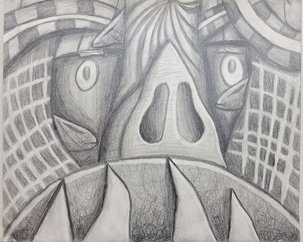

Nose Goes
Spring 2023
Graphite on 11" x 17" drawing paper
Challenge Statement: Create a compostion starting from sketching from life as a reference to then twist it however you see fit
Solution Statement: Upon receiving our prompt, me and the rest of our class went around the campus of our community college to draw what ever caught our eye in our sketch books. What ended up catching my eye the most was a sculpture of a nose surrounding a few trees. I did a rough sketch in my sketch book and then started to delvelop it with elements I that came to my head until I got something that started to resemble a face.
After becoming happy with my composition I moved to recreating my sketch on 14" by 17" art paper. Once that was done I decided to render my piece using various graphite pencils, and adjusting elements to complete the compostion per my instructors comments and feedback.
